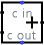

Сумматор
| Библиотека: |
Арифметика |
| Введён в: |
2.0 Beta 11 |
| Внешний вид: |
 |
Поведение
Этот компонент складывает два значения, поступающие на западные входы и выдаёт сумму на восточный выход. Компонент разработан таким образом, что его можно включать каскадно с другими сумматорами чтобы обеспечить сложение с большим количеством битов, чем возможно с одним сумматором: вход переноса предоставляет однобитное значение, которое тоже должно быть прибавлено к сумме (если оно задано), а выход переноса предоставляет однобитное значение переполнения, которое может быть подано на другой сумматор.
Если какое-либо слагаемое содержит несколько плавающих битов или несколько битов с ошибкой, то компонент выполнит частичное сложение. То есть он будет вычислять столько младших битов, сколько возможно. Но выше плавающего бита или бита с ошибкой результат будет иметь плавающие биты или биты с ошибкой.
Контакты
- Западный край, северный конец (вход, разрядность соответствует атрибуту Биты данных)
- Одно из двух значений для сложения.
- Западный край, южный конец (вход, разрядность соответствует атрибуту Биты данных)
- Второе значение для сложения.
- Северный край, отмечен c in (вход, разрядность равна 1)
- Значение переноса для прибавления к сумме. Если значение неизвестно (например, плавающее), то предполагается, что оно равно 0.
- Восточный край (выход, разрядность соответствует атрибуту Биты данных)
- Младшие битыДанных битов суммы двух значений, поступающих на западный край плюс бит cin.
- Южный край, отмечен c out (выход, разрядность равна 1)
- Бит переноса, вычисленный для суммы. Если значения, складываемые как беззнаковые, дают результат, умещающийся в битыДанных битов, то на этом выходе будет 0, в противном случае - 1.
Атрибуты
Когда компонент выбран, или уже добавлен, комбинации от Alt-0 до Alt-9 меняют его атрибут Биты данных
.
- Биты данных
- Разрядность значений для сложения и результата.
Поведение Инструмента Нажатие
Нет.
Поведение Инструмента Текст
Нет.
Назад к Справке по библиотеке